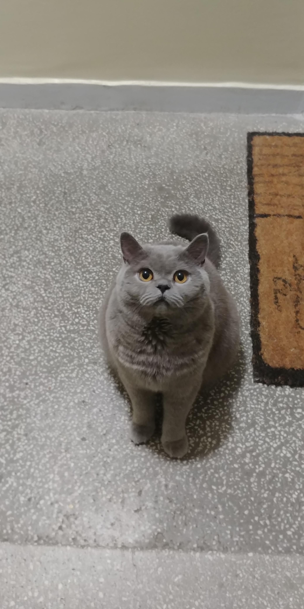

This is going to be a website about cats!
Mainly about british shorithairs
Cats breeds
- Aegean
- American
- Curl
- American
- Bobtail
- American
- Shorthair
- American
- Wirehair
- Aphrodite
- Giant
- Arabian
- Mau
- Australian
- Mist
- Asian
- Asian Semi-longhair
- Balinese
- Bambino
- Bengal
- Birman
- Bombay
- Brazilian Shorthair
- British Semi-longhair
- British Shorthair
- British Longhair
- Burmese
- Burmilla
- California
- Spangled
- Chantilly-Tiffany
- Chartreux
- Chausie
- Cheetoh
- Colorpoint Shorthair
- Cornish
- Rex
- Cymric
- Manx Longhair
- Cyprus
- Devon
- Rex
- Donskoy,
- Sphynx
- Dragon
- Li
- Dwelf
- Egyptian
- Mau
- European Shorthair
- Exotic Shorthair
- Foldex
- German
- Rex
- Havana
- Brown
- Highlander
- Himalayan,
- Colorpoint
- Persian[b]
- Japanese
- Bobtail
- Javanese,
- Colorpoint
- Longhair[c]
- Karelian
- Bobtail
- Khao
- Manee
- Korat
- Korean
- Bobtail
- Korn
- Ja
- Kurilian
- Bobtail,
- Kuril
- Islands
- Bobtail
- LaPerm
- Lykoi
- Maine
- Coon
- Manx
- Mekong
- Bobtail
- Minskin
- Munchkin
- Nebelung
- Napoleon
- Norwegian
- Forest
- Ocicat
- Ojos
- Azules
- Oregon
- Rex
- Oriental
- Bicolor
- Oriental
- Shorthair[d]
- Oriental
- Longhair,[d] or
- Foreign
- Longhair;
- Mandarin;
- British
- Angora (obsolete)
- Persian (modern)
- Persian (traditional)
- Peterbald
- Pixie-bob
- Raas
- Ragamuffin,
- Liebling (obsolete)
- Ragdoll
- Russian
- Blue
- Russian
- White,
- Black,
- and Tabby
- Sam
- Sawet
- Savannah
- Scottish
- Fold
- Selkirk
- Rex
- Serengeti
- Serrade
- petit
- Siamese (modern)
- Siberian,
- Siberian
- Forest Cat
- Neva Masquerade
- Singapura
- Snowshoe
- Sokoke
- Somali
- Sphynx
- Suphalak
- Thai,
- Traditional,
- Classic,
- Siamese;
- Wichien
- Maat[e]
- Thai
- Lilac
- Tonkinese
- Toyger
- Turkish
- Angora
- Turkish
- Van
- Ukrainian
- Levkoy
- Wila
- Krungthep
- York
- Chocolate
Why brithish shorthair?
Compared to most shorthair breeds, British Shorthairs are relatively calm cats when they mature. They are easygoing in nature and talk infrequently. Very affectionate, they become quite attached to the people they own. British Shorthairs are easily trained and very adaptable.